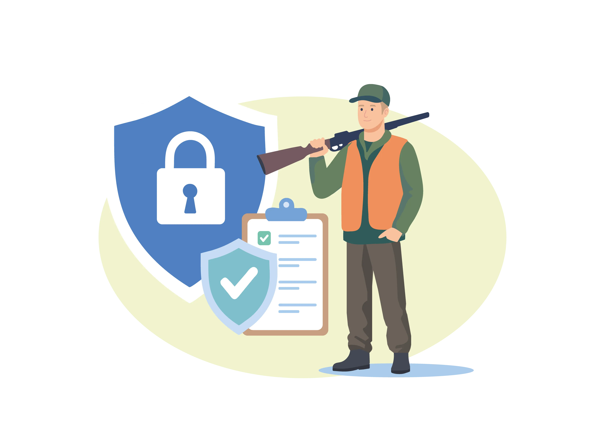

Цифровізація зброї: від Реєстру до «Дії»
Як легально володіти зброєю в умовах воєнного стану
Оформлена вчасно страховка на зброю сьогодні є частиною великої цифрової екосистеми. З червня 2023 року Україна перейшла на роботу з Єдиним реєстром зброї (ЄРЗ), що дозволило мінімізувати бюрократію та перевести більшість процесів у дистанційний формат.
Електронний кабінет та «Єдине вікно»
Раніше переоформлення вимагало обов’язкових візитів до відділків поліції. Тепер сервіс «Єдине вікно для громадян» дозволяє замовити продовження дозволу онлайн. Для цього достатньо авторизуватися за допомогою Дія.Підпис, заповнити форму та додати електронні копії документів.
Зброя в «Дії»
З 2025 року електронний дозвіл доступний прямо у вашому смартфоні. Він підтягується автоматично, якщо дані внесені в ЄРЗ. Ви можете миттєво генерувати витяги та отримувати сповіщення про закінчення терміну дії документів.
Магазини онлайн
Завдяки реєстру, збройові магазини ведуть облік залишків у реальному часі. Це дозволяє вибрати та зарезервувати зброю через інтернет, а особисто завітати лише для фінального отримання.
Документи та терміни
Для отримання дозволу на зберігання вам знадобляться: заява, медична довідка (127/о), квитанція про оплату та договір страхування відповідальності. Дозвіл видається на 3 роки.
- Подавати заяву на продовження слід за місяць до дедлайну.
- Під час воєнного стану обов'язкове переоформлення дещо спрощено, проте автоматичної пролонгації немає — заява до поліції все одно необхідна.
- Штраф за прострочений дозвіл — 85 грн, проте це веде до адмінпорушення, що може стати перешкодою в майбутньому.
Чому можуть відмовити?
Поліція має право відмовити у видачі або продовженні дозволу за наявності судимостей, медичних протипоказань, систематичних порушень громадського порядку (стаття 173 КУпАП) або керування авто в стані сп’яніння. Також підставою є випадки домашнього насильства.
Потрібен страховий поліс для Реєстру?
Наші спеціалісти підготують правильний документ за 10 хвилин. Фото паспорта та коду — все, що нам потрібно.
ОФОРМИТИ СТРАХОВКУ